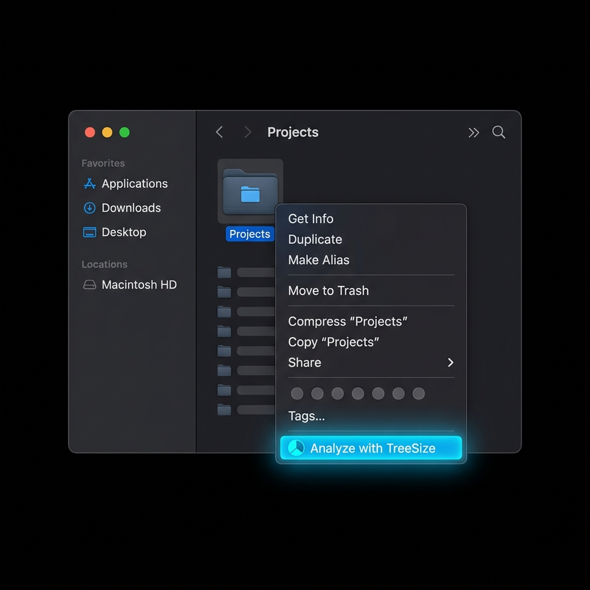

Visualize your disk space in beautiful blocks.
TreeSize analyzes your directories instantly and generates interactive, squarified treemaps. Find massive files, clean up storage, and speed up your Mac.
Designed for speed and elegance
APFS Parallel Scan
Built directly with Swift concurrency using TaskGroups to parallelize disk operations, achieving near-instant results on Apple Silicon SSDs.
Interactive Squarified Treemap
Visualizes your directories as proportional rectangles. Double-click to zoom in, select to reveal stats, and browse with fluid custom animations.
Safe Clean-up
Trash bulky folders and files securely from the sidebar interface, with native confirmation dialogs and immediate real-time treemap updates.

Right-Click to Analyze instantly
TreeSize integrates deeply into the macOS Finder. Analyze any directory in a split second without even opening the app first:
- Quick Action Service: Right-click any folder, go to Quick Actions (or Services), and choose Analyze with TreeSize to boot and scan immediately.
- Open With Menu: Right-click any directory, choose Open With, and select TreeSize to audit its size in a click.
- Finder Drag & Drop: Drag any folder directly from the Finder and drop it anywhere inside the TreeSize window to instantly re-focus the scan.
Launch from your Terminal
Integrate TreeSize perfectly into your development workflow. Type a single command followed by any folder path to launch the visualizer immediately.
During local installation, a symlink is automatically generated in /usr/local/bin/treesize to provide instant command-line utility.
# Analyze your current working directory
treesize .
# Audit heavy developer directories
treesize ~/Library/Developer/Xcode/DerivedData